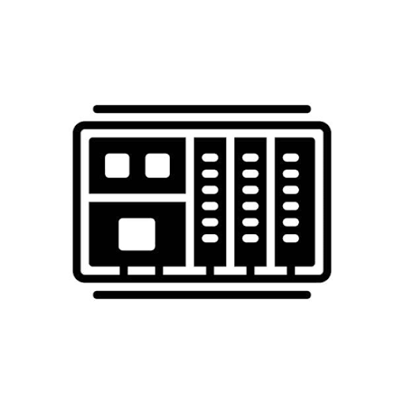

Mein Name ist Caner. Ich bin gelernter Verkäufer, bin aber direkt nach der Ausbildung in die Produktion gewechselt. Seit 2023 arbeite ich bei Danfoss – angefangen als Produktionsmitarbeiter und mittlerweile seit fast zwei Jahren als Einrichter in der Umformabteilung.
Ich war schon immer ein Technikfreak, was ich bisher nie zum Beruf machen konnte. Da ich täglich mit SPS-gesteuerten Anlagen arbeite und eng mit der AV sowie den Teamleitern kommuniziere, weiß ich genau, wie entscheidend der Schritt zur Industrie 4.0 ist.

Ich habe schon als Kind viel Interesse an Technik gehabt, eigenständige Hardware Upgrades oder Reparaturen an Computern und Laptops waren kein Problem.
Betriebssysteme neu aufstellen, infizierte Betriebssysteme wieder zum laufen bringen, Datenrettungen aus Festplatten, Router Installationen, Mesh Netzwerke einrichten, das war teilweise mein Alltag.
Aktuell vertiefe ich auch mein Wissen im Bereich der Programmiersprachen, diese Webseite ist das Ergebnis von 5 Stunden lernphase.